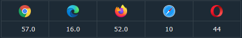
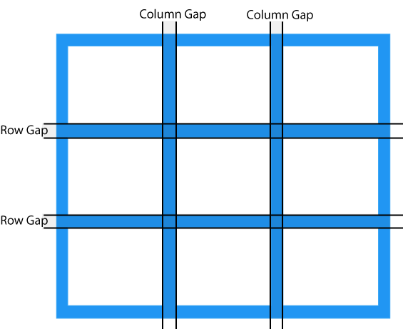

Módulo de diseño de cuadrícula CSS
Diseño de cuadrícula
Las propiedades de la cuadrícula son compatibles con todos los navegadores modernos.

Elementos de la cuadrícula
Un diseño de cuadrícula consta de un elemento principal y uno o más elementos secundarios.
Ejemplo
<div class= "grid-container"> <div class= "grid-item">1</div> <div class= "grid-item">2</div> <div class= "grid-item">3</div> <div class= "grid-item">4</div> <div class= "grid-item">5</div> <div class= "grid-item">6</div> <div class= "grid-item">7</div> <div class= "grid-item">8</div> <div class= "grid-item">9</div> </div>
Mostrar propiedad
Un elemento HTML se convierte en un contenedor de cuadrícula cuando su propiedad display se establece en grid o inline-grid.
Todos los elementos secundarios directos del contenedor de la cuadrícula se convierten automáticamente en grid items .
Grid Columns
Las líneas verticales de los elementos de la cuadrícula se denominan columns .

Grid Rows
Las líneas horizontales de los elementos de la cuadrícula se denominan rows .

Grid Gaps
Los espacios entre cada columna/fila se llaman gaps .

Puede ajustar el tamaño del espacio utilizando una de las siguientes propiedades:
- column-gap
- row-gap
- gap
Ejemplo
La propiedad column-gap establece el espacio entre las columnas:
.grid-container { display: grid; column-gap: 50px; }
Ejemplo
La propiedad row-gap establece el espacio entre las filas:
.grid-container { display: grid; row-gap: 50px; }
Ejemplo
La propiedad gap es una forma abreviada de las propiedades row-gap y column-gap:
La propiedad gap también se puede utilizar para establecer tanto el espacio entre filas como entre columnas en un solo valor:
.grid-container { display: grid; gap: 50px; }
Grid Lines
Las líneas entre columnas se llaman column lines .
Las líneas entre filas se llaman row lines .

Consulte los números de línea al colocar un elemento de cuadrícula en un contenedor de cuadrícula:
Ejemplo
Coloque un elemento de la cuadrícula en la línea de columna 1 y déjelo finalizar en la línea de columna 3:
.item1 { grid-column-start: 1; grid-column-end: 3; }
Ejemplo
Coloque un elemento de la cuadrícula en la línea de fila 1 y déjelo finalizar en la línea de fila 3:
.item1 { grid-row-start: 1; grid-row-end: 3; }
Todas las propiedades de cuadrícula CSS
| Property | Description |
|---|---|
| column-gap | Especifica el espacio entre las columnas. |
| gap | Una propiedad abreviada para las propiedades de gap de fila y gap de columna. |
| grid | Una propiedad abreviada para las propiedades grid-template-rows, grid-template-columns, grid-template-areas, grid-auto-rows, grid-auto-columns y grid-auto-flow. |
| grid-area | Ya sea que especifiques un nombre para el elemento de la cuadrícula, o esta propiedad sea una forma abreviada para las propiedades de inicio de fila de cuadrícula, inicio de columna de cuadrícula, fin de fila de cuadrícula y fin de columna de cuadrícula. |
| grid-auto-columns | Especifica un tamaño de columna por defecto |
| grid-auto-flow | Especifica cómo se insertan los elementos autocolocados en la cuadricula. |
| grid-auto-rows | Especifica un tamaño de fila por defecto. |
| grid-column | Una propiedad abreviada para las propiedades grid-column-start y grid-column-end |
| grid-column-end | Especifique dónde terminar el elemento de la cuadrícula. |
| grid-column-gap | Especifica el tamaño del espacio entre columnas. |
| grid-column-start | Especifique dónde comenzar el elemento de la cuadrícula. |
| grid-gap | Una propiedad abreviada para las propiedades de separación entre filas y separación entre columnas de la cuadrícula. |
| grid-row | Una propiedad abreviada para las propiedades grid-row-start y grid-row-end. |
| grid-row-end | Especifique dónde terminar el elemento de la cuadrícula. |
| grid-row-gap | Especifica el tamaño del espacio entre las filas. |
| grid-row-start | Especifica dónde empezar el elemento de la cuadrícula. |
| grid-template | Una propiedad abreviada para las propiedades grid-template-rows, grid-template-columns y grid-areas. |
| grid-template-areas | Especifica cómo mostrar columnas y filas, utilizando elementos de cuadrícula con nombre. |
| grid-template-columns | Especifica el tamaño de las columnas y cuántas columnas habrá en un diseño en cuadrícula. |
| grid-template-rows | Especifique el tamaño de las filas en un diseño de cuadrícula. |
| row-gap | Especifique la separación entre las filas de la cuadrícula. |